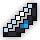
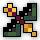
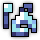
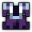
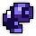
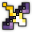
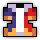

Version 1 (Atk Triangle)
BiS Items & Swapouts:
Main Set:
    (any good dps ring)
(any good dps ring)
Swapouts:
  
BiS Enchants:
- : Overwhelming Strikes - Relative Attack IV - Attack Tradeoff IV - Onshoot Attack IV
- : Shaitan’s Might - Attack Tradeoff IV - Percent Mana Regen IV - Stat Mod Multiplier IV
- : Relative Attack IV - Attack Tradeoff IV - Onhit Dexterity IV
-
 : Relative Attack IV - Attack Tradeoff IV - Percent Mana Regen IV - Onhit/Onability Attack
: Relative Attack IV - Attack Tradeoff IV - Percent Mana Regen IV - Onhit/Onability Attack
For Attack Tradeoff enchants, avoid getting -dexterity.